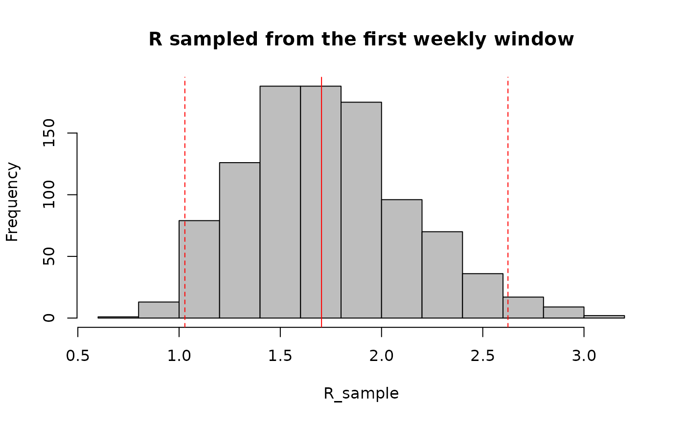

This function derives a sample of R values from the estimations of
instantaneous or case reproduction numbers derived using estimate_R() or
wallinga_teunis().
Arguments
- R
an object generated by
estimate_R()orwallinga_teunis()- n
an integer specifying the number of samples to be taken from the gamma distribution; defaults to 1000.
- window
an integer (or sequence of integers) specifying the window(s) from which to estimate R. Defaults to the first window. If multiple windows are specified, the resulting samples will be drawn from several distributions; defaults to 1L.
Examples
## load data on pandemic flu in a school in 2009
data("Flu2009")
## estimate the reproduction number (method "non_parametric_si")
## when not specifying t_start and t_end in config, they are set to estimate
## the reproduction number on sliding weekly windows
res <- estimate_R(incid = Flu2009$incidence,
method = "non_parametric_si",
config = make_config(list(si_distr = Flu2009$si_distr)))
#> Default config will estimate R on weekly sliding windows.
#> To change this change the t_start and t_end arguments.
## Sample R from the first weekly window
win <- 1L
R_median <- res$R$`Median(R)`[win]
R_CrI <- c(res$R$`Quantile.0.025(R)`[win], res$R$`Quantile.0.975(R)`[win])
set.seed(2019-06-06) # fixing the random seed for reproducibility
R_sample <- sample_posterior_R(res, n = 1000, window = win)
hist(R_sample, col = "grey", main = "R sampled from the first weekly window")
abline(v = R_median, col = "red") # show the median estimated R
abline(v = R_CrI, col = "red", lty = 2) # show the 95%CrI of R
